Anleitung für Spieler – Schritt für Schritt mit Bildern
So öffnest du die App: Handy-Kamera auf den QR-Code halten und den Link antippen – oder im Browser eintippen: stars-trainingsplaner.firebaseapp.com
Kein App-Store nötig. Die App läuft im Browser und wird wie eine normale App auf den Startbildschirm gelegt. Diese Anleitung findest du auch in der App unter Menü → Downloads.
1 · Anmeldenmit deiner Mail-Adresse von Spieler+
2 · InstallierenApp-Symbol auf den Startbildschirm
3 · Push andamit du nichts verpasst
Die App-Bilder in dieser Anleitung zeigen Beispieldaten (Spieler „Tom“). Die gezeichneten Skizzen zeigen Bildschirme des Handys – sie können je nach Modell leicht anders aussehen.
Schritt 1 · Anmelden
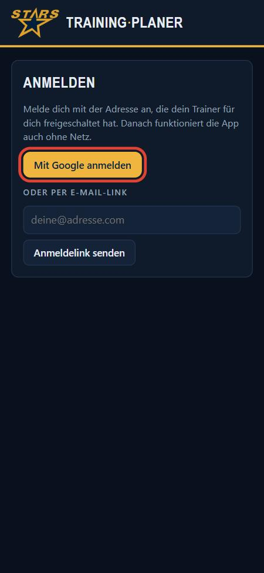
1Mit Google – am einfachsten
App öffnen (QR-Code oder Link).
Auf Mit Google anmelden tippen (rot markiert).
Das Google-Konto mit deiner Spieler+-Adresse wählen. Fertig.
2Kein Google-Konto? Mit Link per Mail
Deine Mail-Adresse in das Feld tippen, Anmeldelink senden.
Mail öffnen (auch im Spam nachsehen) und auf den Link tippen.
iPhone: Öffnet sich der Link nicht in der App: Link in der Mail lange drücken → Link kopieren → in der App in das Feld einfügen → Anmelden.
„Kein Zugriff“? Dann ist diese Adresse nicht freigeschaltet. Mit einer anderen Adresse anmelden oder dem Trainer Bescheid geben.
Schritt 2 · App installieren
Android (Chrome)
stars-trainingsplaner.firebase…
⋮
Neuer Tab
Verlauf
Downloads
Lesezeichen
App installieren
Einstellungen
1App in Chrome öffnen, oben rechts ⋮ → App installieren (oder Zum Startbildschirm hinzufügen).
stars-trainingsplaner.firebase…
⋮
App installieren?
Stars Trainingsplaner
AbbrechenInstallieren
2Mit Installieren bestätigen.
Stars
3Ab jetzt die App über das Stars-Symbol auf dem Startbildschirm öffnen.
iPhone (Safari)
‹›▢⧉
1App in Safari öffnen (nicht in Chrome!), unten auf Teilen tippen – das Quadrat mit dem Pfeil nach oben.
Kopieren ⧉
Zur Leseliste 👓
Lesezeichen hinzufügen 📖
Zum Home-Bildschirm ＋
Drucken 🖨
2Nach unten wischen und Zum Home-Bildschirm wählen.
AbbrechenHome-BildschirmHinzufügen
Stars stars-trainingsplaner…
3Oben rechts Hinzufügen. Dann die App über das Stars-Symbol öffnen und dort noch einmal anmelden.
Am PC einfach im Browser nutzen. Installieren geht in Chrome und Edge über das kleine Symbol rechts in der Adresszeile.
Schritt 3 · Push-Benachrichtigungen einschalten
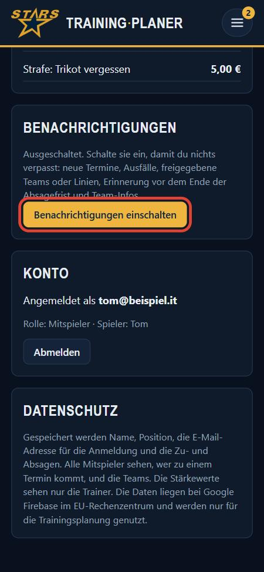
Die installierte App öffnen – also über das Stars-Symbol (am iPhone geht Push nur so).
Oben rechts auf ☰ → Konto.
Bei „Benachrichtigungen“ auf Benachrichtigungen einschalten tippen (rot markiert).
Das Handy fragt nach – Android:Zulassen, iPhone:Erlauben tippen (Skizze rechts).
Zum Testen Test-Nachricht an mich tippen – oben erscheint eine Nachricht. ✔
Du bekommst dann automatisch eine Nachricht, wenn …
ein neuer Termin eingetragen wird,
ein Termin ausfällt oder doch stattfindet,
der Trainer Teams oder Linien einteilt,
die Absagefrist in ca. 3 Stunden endet (Erinnerung),
der Trainer eine Team-Info schreibt.
Aus Versehen „Blockieren“ / „Nicht erlauben“ getippt? Handy-Einstellungen → Apps bzw. Mitteilungen → Stars (Android eventuell unter Chrome) → Benachrichtigungen einschalten. Danach in der App nochmal einschalten.
iPhone: ab iOS 16.4. Jedes Handy muss Push einzeln einschalten.
„Stars“ möchte dir Mitteilungen senden Hinweise, Töne und Kennzeichen
Nicht erlaubenErlauben
Skizze: Abfrage am iPhone. Android: „Zulassen“.
Die App benutzen
Oben rechts ist das Menü ☰: Termine, Team-Info, Downloads (diese Anleitung als PDF) und Konto. Eine goldene Zahl am Menü heißt: Es gibt etwas Neues – in der Team-Info sind neue Einträge mit „neu“ markiert.
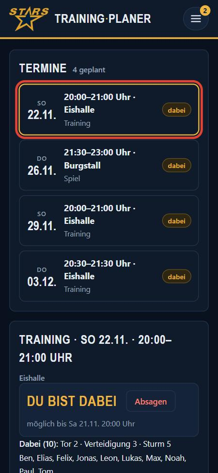
Termine ansehen
Alle kommenden Trainings und Spiele mit Datum, Uhrzeit und Ort.
Rechts steht dein Stand: dabei, abgesagt, Warteliste oder abgemeldet (krank/Urlaub, siehe unten).
Einen Termin antippen → darunter erscheinen die Details.
Wichtig: Du bist bei jedem Termin automatisch dabei. Du musst nur etwas tun, wenn du nicht kannst.
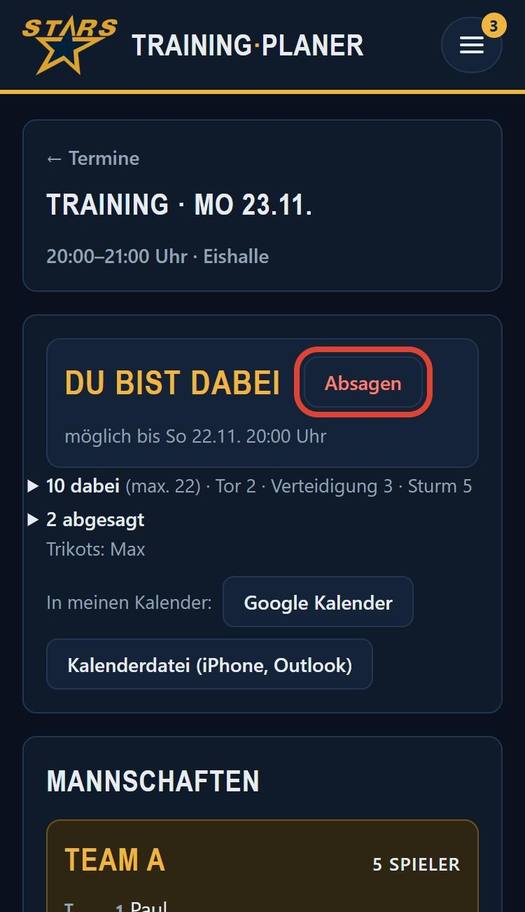
Absagen – so geht's
Termin antippen.
Auf Absagen tippen (rot markiert). Fertig – der Trainer sieht es sofort.
Darunter siehst du, wer dabei ist und wer abgesagt hat.
Frist: Absagen geht bis 24 Stunden vor Beginn. Die genaue Uhrzeit steht beim Termin („möglich bis …“). Danach bitte direkt beim Trainer melden.
Beispiel: Das Training ist am Samstag um 20:00. Du hast am Donnerstag schon gemerkt, dass du nicht kannst → App öffnen → Termin antippen → Absagen. Absagen wäre bis Freitag 20:00 möglich gewesen. Am Samstagnachmittag geht es nicht mehr über die App – dann den Trainer anrufen oder schreiben.
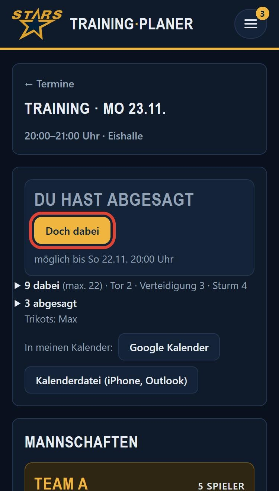
Doch Zeit? Wieder zusagen
Nach dem Absagen steht dort „Du hast abgesagt“. Klappt es doch, einfach Doch dabei tippen (rot markiert) – auch das geht bis 24 Stunden vor Beginn.
Beispiel: Du hast am Montag abgesagt, am Mittwoch fällt dein anderer Termin weg → Termin antippen → Doch dabei.
Voller Termin: die Warteliste
Pro Termin gibt es eine Höchstzahl: bei Spielen 15 Feldspieler (3 volle Linien) und 1 Torhüter, bei Trainings 20 Feldspieler und 2 Torhüter. Verteidiger und Stürmer zählen zusammen.
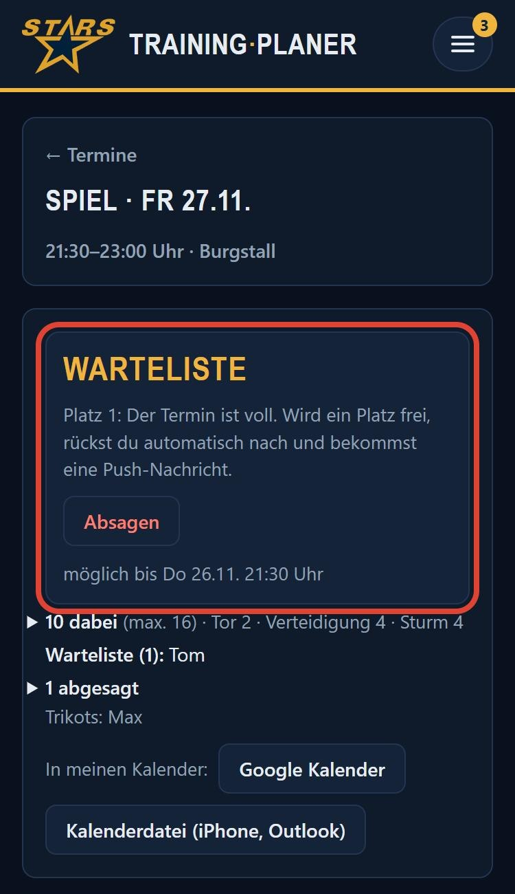
Ist ein Termin voll, setzt der Trainer Spieler auf die Warteliste – Gäste zuerst. Sagst du bei einem vollen Termin „Doch dabei“, kommst du ebenfalls auf die Warteliste.
Beim Termin steht dann „Warteliste“ und dein Platz (rot markiert).
Sagt jemand ab, rückt der Erste automatisch nach und bekommt eine Push-Nachricht „Du bist nachgerückt“.
Kannst du sowieso nicht: Absagen – dann rückt der Nächste nach.
Krank oder im Urlaub?
Bist du mehrere Tage weg, musst du nicht jeden Termin einzeln absagen. Melde einfach den Zeitraum – dann bist du für alle Termine darin abgemeldet, auch für Termine, die der Trainer erst später einträgt.
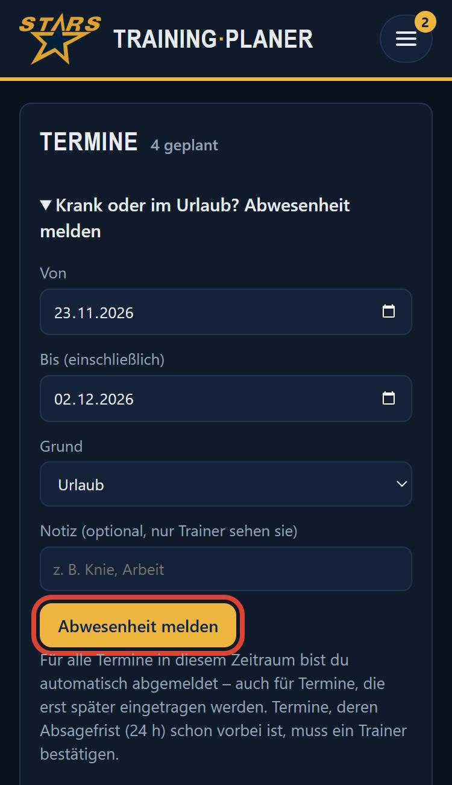
Abwesenheit melden
Unter den Terminen auf Krank oder im Urlaub? Abwesenheit melden tippen.
Von und Bis wählen (der Bis-Tag zählt mit).
Grund wählen: krank, Urlaub oder sonstiges. Eine Notiz ist freiwillig – die sehen nur die Trainer.
Abwesenheit melden tippen (rot markiert).
Kurzfristig? Für Termine, deren Absagefrist (24 h) schon vorbei ist, muss ein Trainer deine Abmeldung bestätigen. Bis dahin steht dort „wartet“ und du zählst noch als dabei.
Beispiel: Du fährst vom 23.11. bis 02.12. in den Urlaub → Abwesenheit melden → Von 23.11. · Bis 02.12. · Grund Urlaub → Abwesenheit melden. Alle Trainings und Spiele in dieser Zeit stehen jetzt auf abgemeldet.
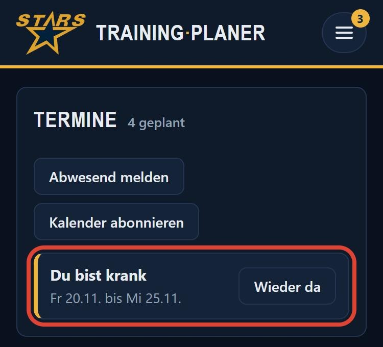
Abgemeldet – und wieder fit
Deine Meldung steht unter „Abwesenheit melden“ (rot markiert). Beim Termin steht „Du bist abgemeldet“.
Früher wieder fit? Auf Wieder da tippen – ab morgen bist du wieder überall dabei.
Eine Meldung für die Zukunft, die du doch nicht brauchst: Löschen.
Beispiel: Krank gemeldet bis Dienstag, am Sonntag geht es dir wieder gut → Wieder da → beim Training am Montag bist du wieder dabei.
Trikots mitnehmen
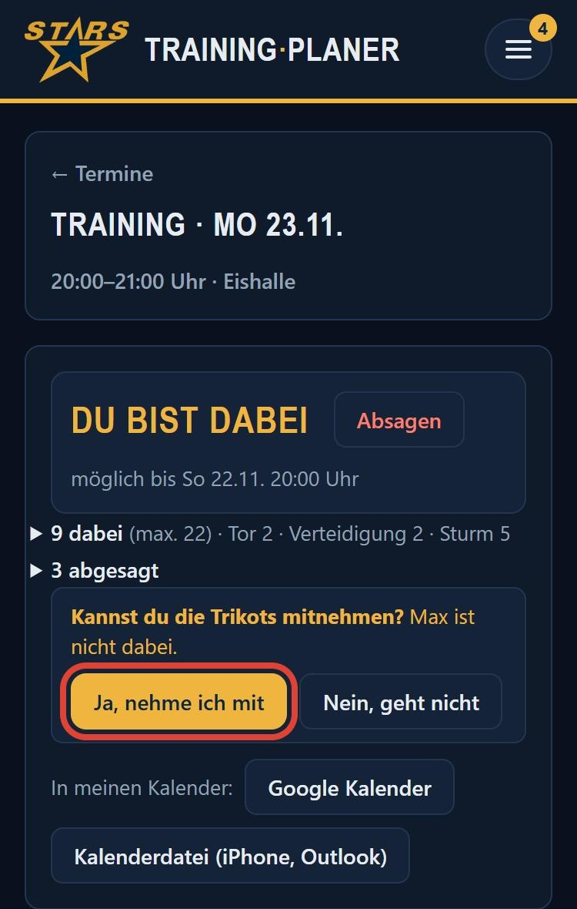
Ein Spieler ist für die Trikots verantwortlich. Ist er bei einem Termin nicht dabei, fragt der Trainer jemand anderen. Wirst du gefragt, bekommst du eine Push-Nachricht und beim Termin steht:
„Kannst du die Trikots mitnehmen?“ → Ja, nehme ich mit (rot markiert) oder Nein, geht nicht.
Der Trainer bekommt deine Antwort sofort aufs Handy. Klappt es nach einem Ja doch nicht, beim Termin Geht doch nicht tippen.
Eine goldene Zahl bei Termine heißt: Eine Anfrage wartet auf deine Antwort. Ganz oben unter Termine steht sie dann bei „Zu erledigen“ – Ansehen führt direkt zum Termin.
Teams, Linien und Kalender
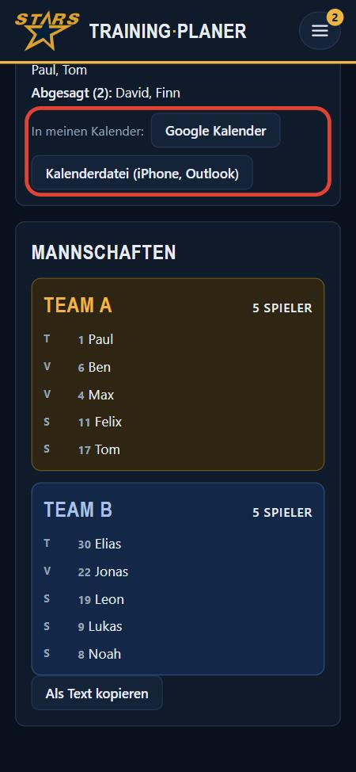
Teams (Training)
Der Trainer teilt Team A (gold) und Team B (blau) ein. Die Teams erscheinen beim Termin, sobald er sie freigibt – du bekommst dazu eine Push-Nachricht. Mit Als Text kopieren lassen sie sich in eine Chat-Gruppe einfügen.
In den eigenen Kalender
Beim Termin unter „In meinen Kalender“ (rot markiert):
Google Kalender – Android und PC: Termin wird angezeigt → Speichern.
Kalenderdatei (iPhone, Outlook) – iPhone: Zum Kalender hinzufügen.
Alle auf einmal: Unter der Terminliste Alle Termine in meinen Kalender tippen – das lädt eine Kalenderdatei mit allen kommenden Terminen. iPhone: öffnen → Alle hinzufügen. Outlook am PC: Datei doppelklicken. Google Kalender: am PC unter Einstellungen → Importieren.
Der Kalendereintrag ändert sich nicht von selbst. Kommen neue Termine dazu oder fällt einer aus, die Datei einfach nochmal laden – vorhandene Termine werden dabei in der Regel aktualisiert statt doppelt angelegt, ausgefallene als „fällt aus“ markiert.
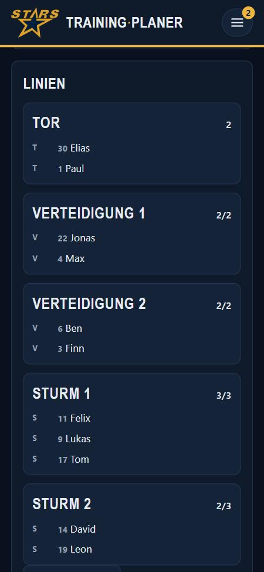
Linien (Spiel)
Bei Spielen stellt der Trainer die Aufstellung auf: Tor, Verteidigung 1, 2 und Sturm 1, 2, 3. Die Zahl vor dem Namen ist die Trikotnummer. Auch die Linien erscheinen erst nach der Freigabe.
Beispiel: Push „Linien sind eingeteilt“ kommt → Nachricht antippen → beim Spiel nach unten scrollen → du stehst in Sturm 1 mit Felix und Lukas.
Team-Info und Konto
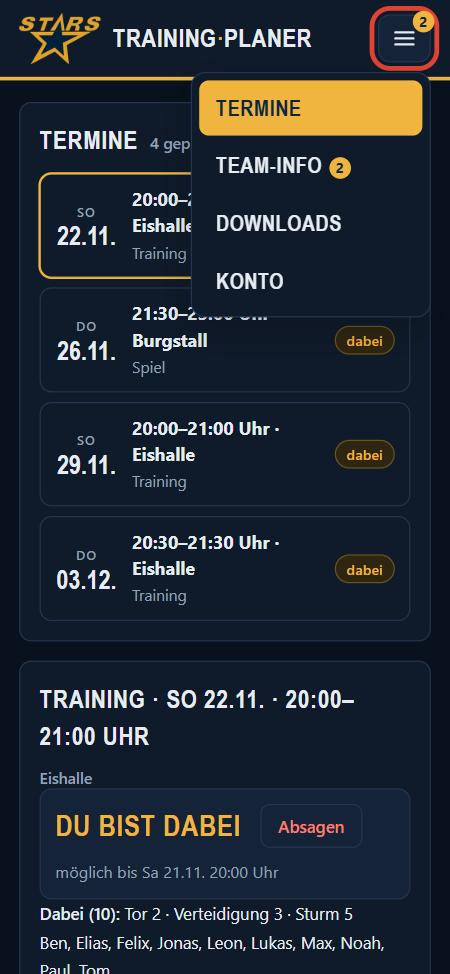
Das Menü
Oben rechts ☰ antippen (rot markiert) und den Bereich wählen. Die goldene 2 zeigt zwei neue Team-Infos.
Team-Info
Hier stehen Nachrichten des Trainers an alle („von Trainer“) und automatische Hinweise wie „Teams sind eingeteilt“ oder Geburtstage. Hinweise zu einem Termin verschwinden nach dem Termin, Nachrichten des Trainers nach 7 Tagen. Gehört ein Eintrag zu einem Termin, führt Termin ansehen direkt dorthin â genauso das Antippen einer Push-Nachricht.
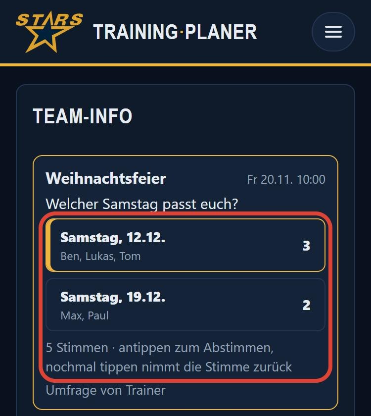
Umfragen
Manchmal fragt der Trainer etwas ab, z. B. den Termin der Weihnachtsfeier. Tippe einfach auf deine Antwort – sie wird gold umrandet. Bei jeder Antwort stehen die Namen, wer sie gewählt hat.
Deine Beitragsart: Jahresbeitrag, pro Training oder Student.
Der offene Betrag und darunter jeder einzelne Posten: Trainings, Zusatzkosten bei Spielen, Strafen.
Bezahlen beim Kassier – er hakt ab, dann verschwindet der Posten.
Nur du siehst deine Beträge.
Beispiel: Offen 28,00 € = Training 15 € + Zusatzkosten Spiel 8 € + Strafe 5 €. Du gibst dem Kassier 28 € → er hakt ab → „Alles bezahlt. Danke!“
Ist etwas offen, kommt jeden Freitag um 12 Uhr eine Push-Nachricht mit dem Betrag als Erinnerung.
Ebenfalls unter Konto: Benachrichtigungen ein/aus und Abmelden (nur auf fremden Geräten nötig).
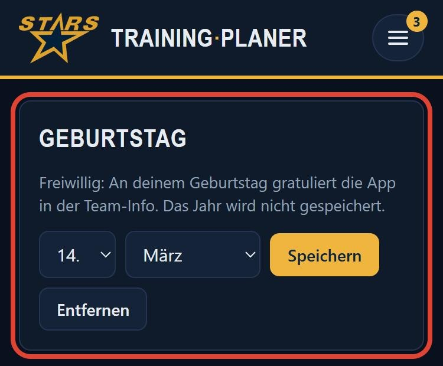
Konto → Geburtstag
Freiwillig: Tag und Monat wählen → Speichern. An deinem Geburtstag gratuliert die App morgens in der Team-Info – alle bekommen eine Push-Nachricht. Das Jahr wird nicht gespeichert. Mit Entfernen löschst du den Eintrag wieder.
Häufige Fragen
Ich sehe keine Termine.
Internet prüfen und die App einmal ganz schließen (aus der App-Übersicht wischen) und neu öffnen. Hilft das nicht: beim Trainer melden.
„Kein Zugriff“ nach dem Anmelden
Du bist mit einer anderen Adresse angemeldet als bei Spieler+. Unter Konto abmelden und mit der richtigen Adresse anmelden – oder dem Trainer deine Adresse geben.
Ich bekomme keine Push-Nachrichten.
Konto öffnen: Steht dort „Eingeschaltet“? Am iPhone nur in der installierten App (Stars-Symbol). Sonst Handy-Einstellungen → Mitteilungen → Stars prüfen.
Der Absagen-Knopf fehlt.
Die Frist (24 h vor Beginn) ist abgelaufen – bitte direkt beim Trainer melden.
Ich stehe auf der Warteliste.
Der Termin ist voll. Wird ein Platz frei, rückst du automatisch nach und bekommst eine Push-Nachricht.
Bei einem Termin steht „wartet“.
Deine Abwesenheit kam nach der Absagefrist. Ein Trainer muss sie für diesen Termin noch bestätigen.
Geht die App ohne Internet?
Ja, mit dem letzten Stand. Eine Absage wird gesendet, sobald wieder Netz da ist.
Etwas sieht anders aus als hier.
Die App wird laufend verbessert. App einmal schließen und neu öffnen, dann ist die neueste Version da.